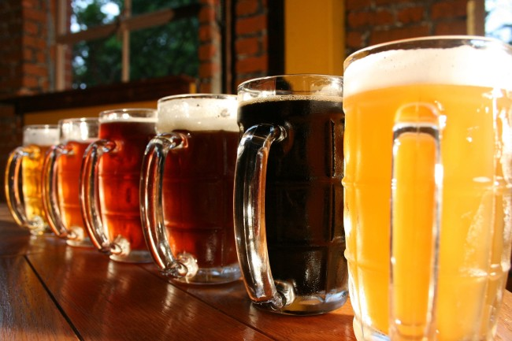

데이터 과학자와 함께 하는 제19대 대통령 선거
협동조합과 인공지능이 함께 만든 맥주(AI Beer)

1. 기계가 만든 맥주
영국 스타트업이 인공지능 기술을 활용한 맥주제품을 만드는 사업을 시작했다. IntelligentX Brewing co.가 인공지능 기술을 활용하여 맥주를 생산하는 방식은 다음과 같다. [^beer-ai]
- 고객이 원하는 좋아하는 맥주에 대한 설문(데이터)을 작성한다.
- 고객의 설문데이터에 근거하여 인공지능이 고객에게 적합한 맥주를 추천하면 소량 맥주를 생산한다.
- 인공지능이 추천한 맥주를 시음하고 평가를 데이터를 인공지능에게 넘긴다.
- 인공지능은 고객에게 추천한 맥주와 고객 평가결과를 바탕으로 학습을 하여 더 나은 맥주 레서피를 개발한다.
상기 과정을 반복하여 인공지능이 학습하여 점점 고객에게 맞는 맞춤형 맥주를 생산해 낸다.
2. 수제맥주 - 일명 정용진 맥주 1
기존 OB맥주와 하이트진로가 사실상 독과점하던 맥주시장에 소규모 양조장에서 자체 개발한 제조법으로 빚은 수제맥주가 변화를 주도하고 있다. 또한, 일명 정용진 맥주로 통하는 수제맥주 전문점(데블스도어)도 신세계푸드가 2년 전에 오픈했다.

3. 협동조합법 2
민주당 손학규 대표(64)가 12일 ‘협동조합기본법안’을 대표 발의했다. 18대 국회에서 처음 발의한 법안이다.
손 대표가 발의한 협동조합기본법안은 모든 분야에서 협동조합의 설립인가 조건을 자유롭게 하고, 국가 및 공공단체가 협동조합의 자율성을 침해하지 못하도록 하는 내용을 담고 있다. 법안은 5명 이상의 발기인이 창립총회를 거쳐 협동조합 설립 등기를 하면 법인격을 취득하도록 해 인가주의가 아닌 신고주의로 하고, 가입 탈퇴의 자유도 보장하도록 하고 있다.
손 대표 측은 “현재 노동·실업·복지·교육·유아·주택·빈곤 등의 문제를 해결하기 위해 8000여개 사업체가 협동조합적 방식으로 운영되고 있으나 법적 장치가 미비해 내용에 맞지 않는 사단법인, 주식회사, 비영리민간단체, 개인사업자 등의 형식을 띠고 있어 성장이 지체된다”고 발의 배경을 설명했다. 또 “2008년 금융위기를 겪으면서 세계 각국에서는 협동조합이 사회경제의 대안 모델로 주목받고 있다”고 설명했다. 손 대표는 “협동조합은 내수 중심의 일자리 창출과 양극화 해소, 경제위기 완화에 기여도가 높다”며 “좋은 성장의 동력이 될 것으로 기대한다”고 밝혔다.